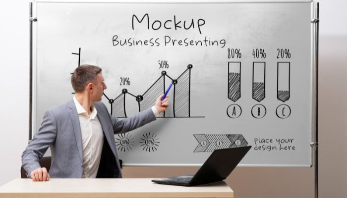

Introduction
In today’s competitive business environment, choosing the right IT partner is critical. Sample Blog explores the key elements of successful IT solutions for businesses.In today’s competitive business environment, choosing the right IT partner is critical. Sample Blog explores the key elements of successful IT solutions for businesses.
Customised Solutions for Educational Institutions
 Every business has unique needs. Sample Blog showcases how bespoke IT solutions maximise efficiency and optimise resources.In today’s competitive business environment, choosing the right IT partner is critical. Sample Blog explores the key elements of successful IT solutions for businesses.In today’s competitive business environment, choosing the right IT partner is critical. Sample Blog explores the key elements of successful IT solutions for businesses.In today’s competitive business environment, choosing the right IT partner is critical. Sample Blog explores the key elements of successful IT solutions for businesses.In today’s competitive business environment, choosing the right IT partner is critical. Sample Blog explores the key elements of successful IT solutions for businesses.In today’s competitive business environment, choosing the right IT partner is critical. Sample Blog explores the key elements of successful IT solutions for businesses. Every business has unique needs. Sample Blog showcases how bespoke IT solutions maximise efficiency and optimise resources.In today’s competitive business environment, choosing the right IT partner is critical. Sample Blog explores the key elements of successful IT solutions for businesses.In today’s competitive business environment, choosing the right IT partner is critical. Sample Blog explores the key elements of successful IT solutions for businesses.In today’s competitive business environment, choosing the right IT partner is critical. Sample Blog explores the key elements of successful IT solutions for businesses.In today’s competitive business environment, choosing the right IT partner is critical. Sample Blog explores the key elements of successful IT solutions for businesses.In today’s competitive business environment, choosing the right IT partner is critical. Sample Blog explores the key elements of successful IT solutions for businesses.
Every business has unique needs. Sample Blog showcases how bespoke IT solutions maximise efficiency and optimise resources.In today’s competitive business environment, choosing the right IT partner is critical. Sample Blog explores the key elements of successful IT solutions for businesses.In today’s competitive business environment, choosing the right IT partner is critical. Sample Blog explores the key elements of successful IT solutions for businesses.In today’s competitive business environment, choosing the right IT partner is critical. Sample Blog explores the key elements of successful IT solutions for businesses.In today’s competitive business environment, choosing the right IT partner is critical. Sample Blog explores the key elements of successful IT solutions for businesses.In today’s competitive business environment, choosing the right IT partner is critical. Sample Blog explores the key elements of successful IT solutions for businesses. Every business has unique needs. Sample Blog showcases how bespoke IT solutions maximise efficiency and optimise resources.In today’s competitive business environment, choosing the right IT partner is critical. Sample Blog explores the key elements of successful IT solutions for businesses.In today’s competitive business environment, choosing the right IT partner is critical. Sample Blog explores the key elements of successful IT solutions for businesses.In today’s competitive business environment, choosing the right IT partner is critical. Sample Blog explores the key elements of successful IT solutions for businesses.In today’s competitive business environment, choosing the right IT partner is critical. Sample Blog explores the key elements of successful IT solutions for businesses.In today’s competitive business environment, choosing the right IT partner is critical. Sample Blog explores the key elements of successful IT solutions for businesses.
Customised Solutions for Every Business
Every business has unique needs. Sample Blog showcases how bespoke IT solutions maximise efficiency and optimise resources.In today’s competitive business environment, choosing the right IT partner is critical. Sample Blog explores the key elements of successful IT solutions for businesses.In today’s competitive business environment, choosing the right IT partner is critical. Sample Blog explores the key elements of successful IT solutions for businesses.In today’s competitive business environment, choosing the right IT partner is critical. Sample Blog explores the key elements of successful IT solutions for businesses.In today’s competitive business environment, choosing the right IT partner is critical. Sample Blog explores the key elements of successful IT solutions for businesses.In today’s competitive business environment, choosing the right IT partner is critical. Sample Blog explores the key elements of successful IT solutions for businesses.
Customised According to Your Needs
 We leverage the latest tools and platforms, including cloud solutions, cybersecurity software, and automation systems, keeping businesses competitive and secure.In today’s competitive business environment, choosing the right IT partner is critical. Sample Blog explores the key elements of successful IT solutions for businesses.In today’s competitive business environment, choosing the right IT partner is critical. Sample Blog explores the key elements of successful IT solutions for businesses.In today’s competitive business environment, choosing the right IT partner is critical. Sample Blog explores the key elements of successful IT solutions for businesses.In today’s competitive business environment, choosing the right IT partner is critical. Sample Blog explores the key elements of successful IT solutions for businesses.
Conclusion
Choosing Sample Blog demonstrates a commitment to growth, innovation, and secure IT solutions for businesses in a digital-first world. Educational InstitutionsEducational Institutions